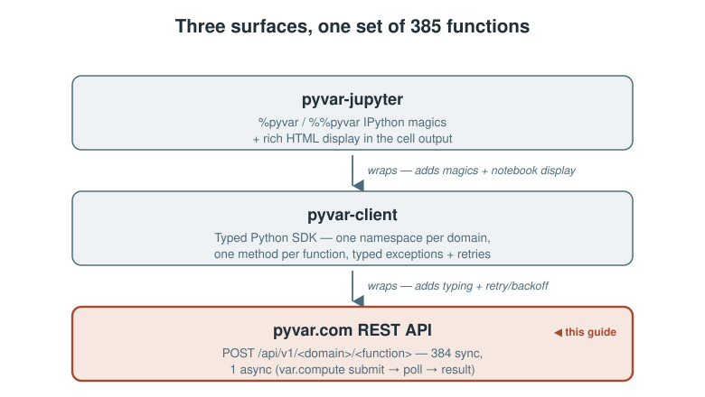
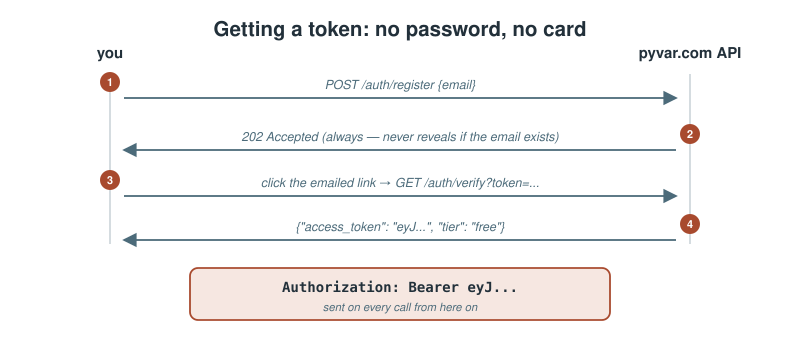
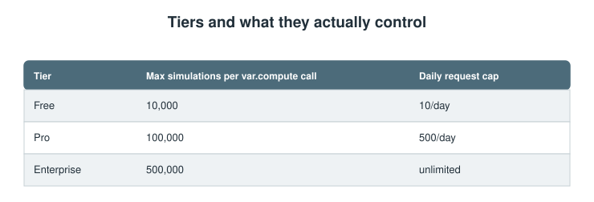
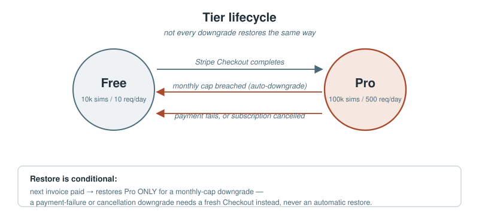

Using pyvar.com's REST API Directly: Auth, Endpoints, Tiers, and Limits
A practical guide to the raw REST API underneath pyvar-client and pyvar-jupyter — for anyone calling it with curl, from a language other than Python, or who just wants to know exactly what's happening under the SDK.
pyvar-client and pyvar-jupyter (covered in their own companion guides) are the recommended way to use pyvar.com from Python. This piece is for everything else: calling the REST API directly with curl, from another language, or just understanding exactly what the SDK is doing on your behalf.

Get an account: register, verify, get a token
There's no password and no credit card for the free tier — just an email:
curl -X POST https://www.pyvar.com/api/v1/auth/register \
-H "Content-Type: application/json" \
-d '{"email": "you@example.com"}'
Returns 202 Accepted immediately (whether or not the email exists yet, or is disposable/suppressed — the response shape never reveals which, so the registration flow can't be used to probe email validity). A verification link arrives by email; clicking it hits:
curl "https://www.pyvar.com/api/v1/auth/verify?token=..."
which returns your first JWT:
{"access_token": "eyJ...", "tier": "free"}
That token is a bearer credential — every subsequent call sends it as Authorization: Bearer eyJ.... There's no login/refresh endpoint; this is the one and only place a free-tier token gets issued (Pro accounts get a second one, see below).

Your first computation
Every one of pyvar's 385 functions is a POST under /api/v1/<domain>/<function_name>, taking a JSON body matching that function's Pydantic schema and returning a JSON result:
curl -X POST https://www.pyvar.com/api/v1/market-risk/historical_simulation_var \
-H "Authorization: Bearer eyJ..." \
-H "Content-Type: application/json" \
-d '{
"returns": [0.01, -0.02, 0.015, 0.008, -0.011],
"portfolio_value": 1000000,
"confidence_level": 0.99
}'
The 8 domain prefixes: /market-risk, /credit-risk, /derivatives, /liquidity, /operational, /portfolio, /regulatory, /alm. The full, live list of all 385 functions and their exact request/response schemas is browsable at /docs — FastAPI's auto-generated OpenAPI UI, always in sync with what's actually deployed since it's generated from the same route definitions this article describes.
The one async endpoint
POST /api/v1/var/compute is the exception: a real Monte Carlo job dispatched to pyvar's Celery/SQS worker fleet. It returns a task_id immediately, not a result:
curl -X POST https://www.pyvar.com/api/v1/var/compute \
-H "Authorization: Bearer eyJ..." -H "Content-Type: application/json" \
-d '{"portfolio_value": 1000000, "returns": [...], "n_simulations": 100000}'
# {"task_id": "..."}
curl "https://www.pyvar.com/api/v1/var/result/<task_id>" \
-H "Authorization: Bearer eyJ..."
# {"status": "success", "result": {...}} (or "pending" / "failure")
pyvar-client's client.var.compute() and pyvar-jupyter's %pyvar var.compute both just automate this submit-then-poll loop — nothing happens here that isn't visible in a plain curl exchange.
Tiers and what they actually control
Your tier is baked into the JWT itself as a claim — decoded once per request, no database lookup on the hot path:

The daily cap is a single account-wide bucket shared across all 385 endpoints — not 385 separate quotas. Exceeding it returns 429 Too Many Requests with a Retry-After header telling you exactly how many seconds until the window resets:
curl -i ...
HTTP/1.1 429 Too Many Requests
Retry-After: 43201
{"detail": "Rate limit exceeded. Please retry later."}
Requesting more simulations than your tier allows on var.compute fails fast, before anything is queued:
{"detail": "Your 'free' tier allows a maximum of 10,000 simulations. Requested: 50,000."}
— a 403 Forbidden, not a 422, since the request is well-formed; it's just not something this account is entitled to.
Pro's monthly caps, and what happens if you hit one
Beyond the daily request cap, Pro accounts carry two monthly caps that don't just throttle — breaching either one hard-downgrades the account to Free for the rest of the billing period:
- 5,000 requests/month, checked generically across every endpoint.
- 2,000,000 simulations/month, checked only against
var.compute(the one endpoint that tracks simulation counts at all).
Hit either one, and the response is a 403 explaining exactly what happened and when it resolves:
{"detail": "Your Pro plan's monthly request limit has been reached. Your account has moved to the Free plan for the rest of this billing period; full Pro limits resume automatically at your next billing date."}
This isn't a silent downgrade — it writes an audit record and sends a notification email — and it isn't permanent: the account is automatically restored to Pro the next time a subscription invoice is paid successfully, with no action needed from the user.

Upgrading to Pro
curl -X POST https://www.pyvar.com/api/v1/billing/checkout \
-H "Authorization: Bearer eyJ..."
# {"checkout_url": "https://checkout.stripe.com/..."}
Redirect to that URL — it's Stripe's own hosted Checkout page, so pyvar's infrastructure never touches card details directly. After payment, Stripe redirects back to pyvar's dashboard with a ?checkout_session_id=... query parameter, which the frontend exchanges for a fresh token:
curl "https://www.pyvar.com/api/v1/billing/checkout/complete?session_id=cs_..."
# {"access_token": "eyJ...", "tier": "pro"}
That exchange step matters more than it looks: your existing JWT's tier claim doesn't update itself just because Stripe processed a payment — the database changes immediately (via a webhook Stripe calls server-to-server), but an already-issued token keeps whatever tier it was minted with until you fetch a new one. GET /billing/checkout/complete is that one bridge — without it, a successful subscription would be real in the database but invisible to the API until some other token refresh happened. There isn't one; this is it.
What's deliberately out of scope today
Enterprise tier is a manual, sales-assisted process — there's no self-service checkout for it, by design. And Pro's entire value proposition today is the higher daily/monthly caps above; no priority queue, no extended result retention yet — both explicitly deferred to a later phase, not silently missing.
Try it
# 1. Register (check your email for the link)
curl -X POST https://www.pyvar.com/api/v1/auth/register \
-H "Content-Type: application/json" -d '{"email": "you@example.com"}'
# 2. Verify (from the emailed link) -- copy the access_token
curl "https://www.pyvar.com/api/v1/auth/verify?token=..."
# 3. Compute something
curl -X POST https://www.pyvar.com/api/v1/market-risk/historical_simulation_var \
-H "Authorization: Bearer eyJ..." -H "Content-Type: application/json" \
-d '{"returns": [0.01,-0.02,0.015,0.008,-0.011], "portfolio_value": 1000000}'
Sources
api/routes/auth.py— registration, verification, JWT issuance.api/middleware/auth.py— JWT decoding,TokenPayload, per-tiermax_simulations.api/middleware/rate_limit.py— daily and monthly request-count caps, the shared-scope design, downgrade trigger.api/routes/var.py— the asyncvar.compute/var.resultendpoints, the monthly simulation-count cap.api/routes/billing.py— Stripe Checkout flow, the JWT-staleness bridge, webhook-driven tier changes.config.py— the actual numeric limits (rate_limit_free_daily,rate_limit_pro_daily,rate_limit_pro_monthly_requests,rate_limit_pro_monthly_simulations) quoted directly.main.py— router registration, the 8 domain prefixes,/docsOpenAPI UI.docs/publications/pyvar-client-guide-medium-article.md,pyvar-jupyter-guide-medium-article.md— the companion SDK/notebook guides this piece complements without repeating.